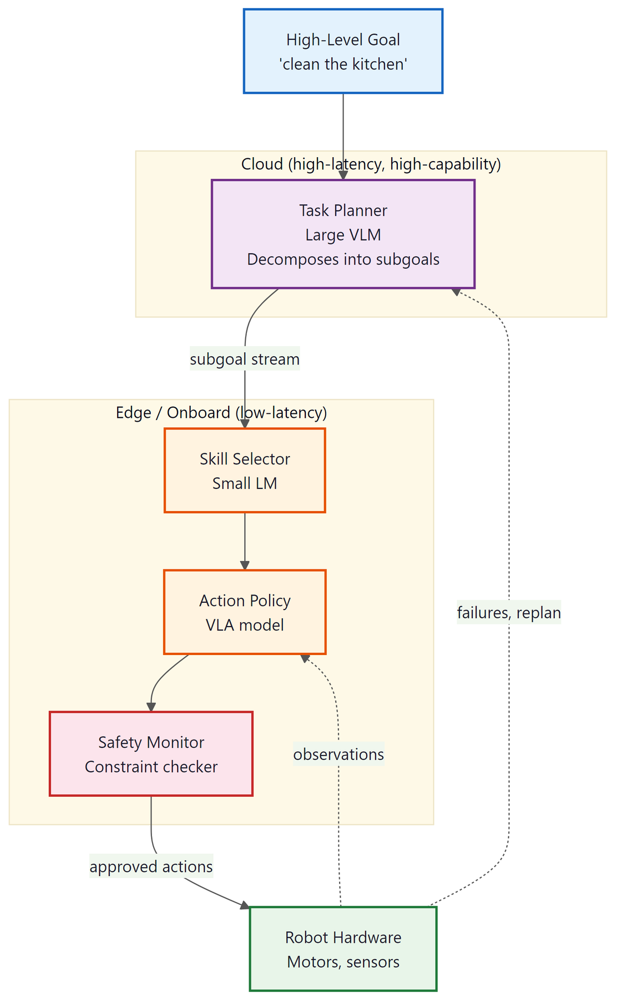

A robot that can follow language instructions is useful. A team of robots that can coordinate through language is transformative.
Pixel, Swarm-Curious AI Agent
While Section 31.5 focused on how individual robots learn to act from vision and language, this section addresses the higher-level question: how do LLMs plan, navigate, and coordinate teams of robots? The key insight is that LLMs excel at the cognitive layers of robotics (task decomposition, spatial reasoning, inter-agent communication) while specialized controllers handle the low-level motor execution. This separation of concerns mirrors the division between strategic planning and muscle memory in biological systems. We survey the major frameworks for LLM-based robot planning (SayCan, Code-as-Policies, Inner Monologue), navigation with language models, multi-robot coordination, and the practical challenges of deploying LLMs on resource-constrained robot hardware at the edge.
Prerequisites
This section builds directly on the VLA models and embodied agent concepts from Section 31.5. Familiarity with agentic planning from Part VI (tool use, multi-agent coordination) is essential, as the techniques here extend those patterns into physical environments. Understanding of vision-language models from Section 31.1 and the transformer architecture provides the necessary foundation for the model architectures discussed.
26.6.1 LLM Task Planning for Robots
The fundamental challenge in language-conditioned robotics is bridging the gap between what a human says ("make me a sandwich") and what a robot can do ("move arm to position [0.3, 0.1, 0.5], close gripper"). LLMs possess rich knowledge about task structure: they know that making a sandwich involves getting bread, adding fillings, and assembling layers. However, they lack grounding in what is physically possible for a specific robot in a specific environment. Three influential frameworks address this grounding problem in complementary ways.

then executed onboard by a smaller skill selector, VLA action policy, and safety monitor that drives robot hardware, with observations and replan triggers flowing back upward26.6.1.1 SayCan: Grounding Language in Affordances
SayCan (Ahn et al., 2022) introduced the principle of scoring LLM-proposed actions against real-world affordances. The system maintains a fixed set of primitive skills (pick, place, navigate, open, close) each with a learned affordance function that estimates the probability of successful execution given the current state. The LLM proposes which skill to execute next, and the affordance model filters out physically impossible or unlikely-to-succeed actions.
The scoring mechanism combines two probabilities. The LLM provides a "task relevance" score: how useful is this action for completing the instruction? The affordance model provides a "feasibility" score: how likely is this action to succeed given the current robot state and environment? The product of these two scores determines which action is executed. This means an LLM might propose "pick up the plate" as the most relevant next step, but if the affordance model detects that the plate is out of reach, a reachable alternative like "navigate to the counter" will score higher overall.
# SayCan-style affordance scoring with an LLM planner
# Combines language model task relevance with physical feasibility
import numpy as np
from dataclasses import dataclass
from typing import List, Dict, Optional
@dataclass
class RobotSkill:
"""A primitive robot skill with an affordance model."""
name: str
description: str
affordance_score: float # P(success | current_state), from learned model
@dataclass
class ScoredAction:
"""An action scored by both LLM relevance and physical affordance."""
skill: RobotSkill
llm_score: float # P(useful for task | instruction)
affordance: float # P(executable | current state)
combined: float # llm_score * affordance
class SayCanPlanner:
"""
LLM-based task planner grounded in physical affordances.
The LLM proposes actions; affordance models filter for feasibility.
"""
def __init__(self, llm_client, available_skills: List[RobotSkill]):
self.llm = llm_client
self.skills = available_skills
def score_skills(
self, instruction: str, context: str
) -> List[ScoredAction]:
"""Score all available skills for relevance to the current task."""
scored = []
for skill in self.skills:
# Query LLM for task relevance
prompt = (
f"Task: {instruction}\n"
f"Progress so far: {context}\n"
f"Candidate action: {skill.description}\n"
f"How useful is this action for completing the task? "
f"Score from 0.0 to 1.0:"
)
llm_response = self.llm.complete(prompt)
llm_score = float(llm_response.strip())
# Combine LLM relevance with physical affordance
combined = llm_score * skill.affordance_score
scored.append(ScoredAction(
skill=skill,
llm_score=llm_score,
affordance=skill.affordance_score,
combined=combined,
))
# Sort by combined score (highest first)
scored.sort(key=lambda s: s.combined, reverse=True)
return scored
def plan_and_execute(
self, instruction: str, max_steps: int = 10
) -> List[str]:
"""Execute a full task by iteratively selecting the best action."""
executed = []
context = "No actions taken yet."
for step in range(max_steps):
scored = self.score_skills(instruction, context)
best = scored[0]
# Check if the task is complete
if best.skill.name == "done" and best.combined > 0.5:
break
print(f"Step {step + 1}: {best.skill.description} "
f"(LLM={best.llm_score:.2f}, "
f"affordance={best.affordance:.2f}, "
f"combined={best.combined:.2f})")
executed.append(best.skill.description)
context = " -> ".join(executed)
return executed
# Example: kitchen robot with available skills
skills = [
RobotSkill("navigate_counter", "Go to the counter", affordance_score=0.95),
RobotSkill("navigate_fridge", "Go to the fridge", affordance_score=0.90),
RobotSkill("pick_sponge", "Pick up the sponge", affordance_score=0.85),
RobotSkill("pick_plate", "Pick up the plate", affordance_score=0.10), # out of reach
RobotSkill("place_sink", "Place object in the sink", affordance_score=0.80),
RobotSkill("done", "Task complete", affordance_score=1.0),
]
print(f"SayCan planner initialized with {len(skills)} available skills")
print(f"Note: 'pick_plate' has low affordance (0.10) because it is out of reach")26.6.1.2 Code-as-Policies: LLMs Write Robot Programs
Code-as-Policies (Liang et al., 2023) takes a different approach: instead of scoring pre-defined skills, the LLM generates executable Python code that calls robot APIs directly. Given an instruction like "stack the blocks by color, darkest on bottom," the LLM writes a program that calls perception functions to identify block colors, sorts them by brightness, and issues pick-and-place commands in the correct order.
This approach is far more expressive than SayCan's fixed skill set. The LLM can compose novel behaviors by combining API calls with standard programming constructs (loops, conditionals, variables). It can handle spatial reasoning ("put the cup to the left of the plate"), quantitative instructions ("move 30 centimeters forward"), and conditional logic ("if the drawer is closed, open it first"). The robot's API serves as the grounding mechanism: the LLM can only call functions that the robot actually supports.
Code-as-Policies reveals a profound insight about LLMs and robotics: Python code is the ideal intermediate representation between natural language and robot actions. Code is structured enough for reliable execution, expressive enough to capture complex task logic, and familiar enough that LLMs (trained on billions of lines of code) generate it fluently. The robot API definition in the prompt acts as a contract: it tells the LLM exactly what actions are available, what parameters they accept, and what they return. This is fundamentally the same pattern as tool use in agentic AI systems, applied to physical actions.
26.6.1.3 Inner Monologue: Closed-Loop Language Feedback
Inner Monologue (Huang et al., 2023) addresses a critical weakness of open-loop planners: they generate a full plan before execution and cannot adapt when things go wrong. Inner Monologue creates a closed feedback loop where the robot's perception system describes the outcome of each action in natural language, and the LLM uses this feedback to adjust its plan.
After each action, a scene descriptor (often a VLM) generates a textual summary: "The robot attempted to pick up the red cup but the gripper closed on empty air. The cup is 5cm to the left of where the gripper reached." The LLM reads this description and replans: "The pick failed because of a position error. I should adjust the target 5cm to the left and retry." This creates a conversational loop between the planner and the environment, leveraging the LLM's ability to reason about failure modes and generate recovery strategies.
When implementing Inner Monologue, keep the observation descriptions concise and structured. A verbose VLM description ("I see a beautifully set dining table with various items...") wastes tokens and can confuse the planner. Use a template: "[Action result]: [success/failure]. [Object states]. [Robot state]." This structured format helps the LLM focus on actionable information.
26.6.2 Robot Navigation with LLMs
In early SayCan experiments, the robot once attempted to "clean the table" by picking up each item individually and placing it in the sink, including the salt shaker, a napkin, and somebody's phone. The LLM knew conceptually what "clean the table" meant, but the affordance model had no concept of "things people might want back." Grounding language in the physical world turns out to require social common sense, not just physics.
Navigation is one of the most natural applications of language-conditioned robotics. Humans routinely give navigation instructions in natural language ("go to the kitchen, then look for the red mug on the counter by the window"), and these instructions require spatial reasoning, landmark recognition, and semantic understanding that LLMs handle well.
26.6.2.1 LM-Nav: Language-Driven Visual Navigation
LM-Nav (Shah et al., 2023) combines three foundation models for zero-shot navigation: a vision-language model (CLIP) for grounding landmarks in images, a large language model for parsing navigation instructions into landmark sequences, and a visual navigation model (ViNG) for point-to-point traversal. Given an instruction like "walk past the fountain and turn left at the large oak tree," the LLM decomposes this into an ordered list of landmarks: [fountain, oak tree, destination]. CLIP matches each landmark against the robot's topological map of the environment (built from prior exploration), and ViNG navigates between matched nodes.
The critical design principle is that no component requires task-specific fine-tuning. The LLM was trained on internet text, CLIP was trained on image-caption pairs, and ViNG was trained on prior exploration trajectories. LM-Nav composes these pretrained models at inference time, demonstrating that general-purpose foundation models can be combined for embodied tasks without collecting any navigation demonstration data.
26.6.2.2 VLM-Based Obstacle Reasoning
Beyond landmark-based navigation, VLMs enable sophisticated obstacle reasoning. A camera-equipped robot can query a VLM: "Is the path ahead clear? Describe any obstacles." The VLM might respond: "There is a cardboard box blocking the left side of the hallway. The right side has approximately 80cm of clearance, sufficient for the robot to pass." The LLM planner uses this description to select a trajectory that avoids the obstacle.
This approach handles novel obstacles that traditional computer vision pipelines would miss. A conventional obstacle detector trained on standard datasets might not recognize a toppled houseplant or an open laptop bag as obstacles. A VLM, with its broad visual understanding, can identify and reason about virtually any object that might impede navigation.
# VLM-based navigation goal parsing and semantic map building
# Converts natural language goals into actionable navigation targets
from dataclasses import dataclass, field
from typing import List, Tuple, Optional, Dict
import numpy as np
@dataclass
class SemanticLandmark:
"""A landmark in the semantic map with position and description."""
name: str
position: Tuple[float, float] # (x, y) in meters
description: str
embedding: Optional[np.ndarray] = None # CLIP embedding
@dataclass
class NavigationGoal:
"""A parsed navigation goal with waypoints."""
raw_instruction: str
landmarks: List[str]
waypoints: List[Tuple[float, float]]
final_target: Optional[str] = None
class VLMNavigationPlanner:
"""
Parse natural language navigation goals using an LLM,
ground them in a semantic map, and produce waypoint sequences.
"""
def __init__(self, llm_client, vlm_client, semantic_map: List[SemanticLandmark]):
self.llm = llm_client
self.vlm = vlm_client
self.map = {lm.name: lm for lm in semantic_map}
def parse_instruction(self, instruction: str) -> List[str]:
"""Use an LLM to decompose a navigation instruction into landmarks."""
prompt = (
f"Extract an ordered list of landmarks from this navigation instruction.\n"
f"Available landmarks: {list(self.map.keys())}\n"
f"Instruction: '{instruction}'\n"
f"Return only the landmark names, one per line, in order."
)
response = self.llm.complete(prompt)
landmarks = [ln.strip() for ln in response.strip().split("\n") if ln.strip()]
return landmarks
def ground_landmarks(self, landmarks: List[str]) -> List[Tuple[float, float]]:
"""Convert landmark names to (x, y) waypoints from the semantic map."""
waypoints = []
for name in landmarks:
if name in self.map:
waypoints.append(self.map[name].position)
else:
# Fuzzy match: find closest landmark by name similarity
best_match = min(
self.map.keys(),
key=lambda k: self._edit_distance(k.lower(), name.lower()),
)
print(f" Landmark '{name}' not found; matched to '{best_match}'")
waypoints.append(self.map[best_match].position)
return waypoints
def assess_path_safety(self, image: np.ndarray) -> Dict[str, str]:
"""Use a VLM to assess whether the current path is clear."""
response = self.vlm.query(
image=image,
prompt=(
"Analyze this robot camera view for navigation safety. "
"Report: (1) Is the path ahead clear? (2) Describe any obstacles. "
"(3) Estimated clearance in centimeters."
),
)
return {"assessment": response, "timestamp": "now"}
def plan(self, instruction: str) -> NavigationGoal:
"""Full pipeline: parse instruction, ground landmarks, produce waypoints."""
landmarks = self.parse_instruction(instruction)
waypoints = self.ground_landmarks(landmarks)
return NavigationGoal(
raw_instruction=instruction,
landmarks=landmarks,
waypoints=waypoints,
final_target=landmarks[-1] if landmarks else None,
)
@staticmethod
def _edit_distance(a: str, b: str) -> int:
"""Simple Levenshtein distance for fuzzy matching."""
m, n = len(a), len(b)
dp = list(range(n + 1))
for i in range(1, m + 1):
prev, dp[0] = dp[0], i
for j in range(1, n + 1):
temp = dp[j]
dp[j] = min(dp[j] + 1, dp[j-1] + 1, prev + (0 if a[i-1] == b[j-1] else 1))
prev = temp
return dp[n]
# Example: building a semantic map and parsing a navigation goal
semantic_map = [
SemanticLandmark("front_door", (0.0, 0.0), "Main entrance to the building"),
SemanticLandmark("kitchen", (5.2, 3.1), "Kitchen with counter and sink"),
SemanticLandmark("living_room", (3.0, 6.5), "Open living room area"),
SemanticLandmark("bedroom", (8.1, 7.2), "Primary bedroom"),
SemanticLandmark("counter", (5.5, 2.8), "Kitchen counter near the window"),
]
print(f"Semantic map built with {len(semantic_map)} landmarks")
print(f"Example instruction: 'Go to the kitchen and find the red mug on the counter'")26.6.2.3 Semantic Map Building with Language
A semantic map enriches traditional occupancy grids with natural language descriptions. As a robot explores an environment, a VLM generates descriptions of each region: "This is a kitchen with stainless steel appliances and a marble countertop. There is a red mug on the counter near the window." These descriptions are stored alongside spatial coordinates, creating a map that can be queried with natural language.
When a user says "go to where I left my keys," the system encodes this query and compares it against all region descriptions using embedding similarity. If a previous observation recorded "a set of keys on the coffee table in the living room," the system identifies the living room coffee table as the navigation target. This transforms robot navigation from a purely geometric problem into a semantic search problem, leveraging the same embedding and vector search techniques used in text-based RAG systems.
26.6.3 Multi-Robot Coordination
Scaling from a single robot to a team introduces coordination challenges that LLMs are uniquely suited to address. When multiple robots must collaborate on a task ("clean the entire house before the guests arrive"), someone needs to decompose the task, assign subtasks to specific robots based on their capabilities, resolve conflicts (two robots heading for the same doorway), and adapt the plan when unexpected events occur. LLMs serve as the coordination layer that handles these high-level decisions.
26.6.3.1 LLM-Based Task Allocation
In a heterogeneous robot team, different robots have different capabilities. A wheeled robot can carry heavy loads but cannot climb stairs. A drone can survey an area quickly but cannot manipulate objects. A humanoid robot can open doors but moves slowly. The LLM coordinator receives a task description and a capability manifest for each robot, then generates an allocation plan that matches subtasks to the most capable robot.
# Multi-robot task allocation with an LLM coordinator
# Assigns subtasks to heterogeneous robots based on capabilities
from dataclasses import dataclass, field
from typing import List, Dict, Optional
from enum import Enum
import json
class RobotType(Enum):
WHEELED = "wheeled_base"
DRONE = "aerial_drone"
HUMANOID = "humanoid"
ARM = "fixed_arm"
@dataclass
class RobotAgent:
"""A robot with specific capabilities and current status."""
robot_id: str
robot_type: RobotType
capabilities: List[str]
current_task: Optional[str] = None
location: str = "base_station"
battery_level: float = 1.0
@dataclass
class TaskAssignment:
"""A subtask assigned to a specific robot."""
task_id: str
description: str
assigned_robot: str
priority: int
dependencies: List[str] = field(default_factory=list)
class MultiRobotCoordinator:
"""
LLM-based coordinator for heterogeneous robot teams.
Decomposes high-level tasks and allocates to robots by capability.
"""
def __init__(self, llm_client, robots: List[RobotAgent]):
self.llm = llm_client
self.robots = {r.robot_id: r for r in robots}
def _build_capability_manifest(self) -> str:
"""Summarize robot capabilities for the LLM."""
lines = []
for rid, robot in self.robots.items():
status = "idle" if robot.current_task is None else f"busy: {robot.current_task}"
lines.append(
f" {rid} ({robot.robot_type.value}): "
f"capabilities={robot.capabilities}, "
f"location={robot.location}, "
f"battery={robot.battery_level:.0%}, "
f"status={status}"
)
return "\n".join(lines)
def decompose_and_allocate(
self, high_level_task: str
) -> List[TaskAssignment]:
"""Decompose a task and assign subtasks to robots."""
manifest = self._build_capability_manifest()
prompt = (
f"You are a multi-robot task coordinator.\n\n"
f"HIGH-LEVEL TASK: {high_level_task}\n\n"
f"AVAILABLE ROBOTS:\n{manifest}\n\n"
f"Decompose the task into subtasks and assign each to the best robot.\n"
f"Consider: robot capabilities, current location, battery level.\n"
f"Return a JSON array of objects with fields:\n"
f' "task_id", "description", "assigned_robot", '
f'"priority" (1=highest), "dependencies" (list of task_ids)\n'
f"Return ONLY valid JSON."
)
response = self.llm.complete(prompt)
assignments_raw = json.loads(response)
assignments = []
for item in assignments_raw:
assignment = TaskAssignment(
task_id=item["task_id"],
description=item["description"],
assigned_robot=item["assigned_robot"],
priority=item["priority"],
dependencies=item.get("dependencies", []),
)
assignments.append(assignment)
# Update robot status
if assignment.assigned_robot in self.robots:
self.robots[assignment.assigned_robot].current_task = (
assignment.description
)
return assignments
def resolve_conflict(
self, robot_a: str, robot_b: str, conflict_description: str
) -> str:
"""Use the LLM to resolve a coordination conflict."""
prompt = (
f"Two robots have a coordination conflict.\n"
f"Robot A ({robot_a}): {self.robots[robot_a].current_task}\n"
f"Robot B ({robot_b}): {self.robots[robot_b].current_task}\n"
f"Conflict: {conflict_description}\n"
f"Propose a resolution that minimizes total delay. "
f"Specify which robot should yield and what it should do instead."
)
return self.llm.complete(prompt)
# Example: warehouse robot team
team = [
RobotAgent(
"carrier_01", RobotType.WHEELED,
["heavy_lifting", "transport", "floor_navigation"],
location="warehouse_A", battery_level=0.85,
),
RobotAgent(
"drone_01", RobotType.DRONE,
["aerial_survey", "inventory_scan", "photography"],
location="charging_pad", battery_level=0.95,
),
RobotAgent(
"arm_01", RobotType.ARM,
["precision_pick", "sorting", "packaging"],
location="packing_station", battery_level=1.0,
),
RobotAgent(
"humanoid_01", RobotType.HUMANOID,
["door_operation", "stair_climbing", "object_manipulation"],
location="entrance", battery_level=0.70,
),
]
print(f"Multi-robot team initialized: {len(team)} robots")
for r in team:
print(f" {r.robot_id}: {r.robot_type.value}, {len(r.capabilities)} capabilities")26.6.3.2 Communication Protocols Between Robot Agents
In LLM-coordinated multi-robot systems, communication between agents typically follows one of two patterns. In centralized coordination, all robots report their state to a central LLM planner, which issues updated commands. This is simpler to implement and avoids conflicting decisions, but creates a single point of failure and requires constant network connectivity. In decentralized coordination, each robot runs its own LLM (or a distilled version) and broadcasts structured messages to other robots. Messages follow a schema: [robot_id, timestamp, message_type, content], where message types include status updates, task completions, conflict alerts, and help requests.
The choice between centralized and decentralized architectures depends on the deployment environment. Indoor robots in a warehouse with reliable Wi-Fi can use centralized coordination. Outdoor robots or drone swarms operating in areas with intermittent connectivity require decentralized approaches with graceful degradation when communication is lost.
26.6.3.3 Hierarchical Planning
The most effective multi-robot systems use hierarchical planning with at least two levels. A high-level VLM planner observes the overall scene (often through overhead cameras or drone feeds), understands the global task state, and issues strategic directives: "Robot A, clear the left aisle. Robot B, bring pallets from zone 3 to the loading dock." Low-level controllers on each robot translate these directives into motor commands, handling obstacle avoidance, path planning, and manipulation. This separation allows the expensive LLM inference to run at a slow cadence (every 5 to 10 seconds) while low-level control runs at the fast rates required for safe operation (50 to 100 Hz).
LLM inference takes 200ms to 2s per call, while safe robot control requires decisions at 50 to 100 Hz (every 10 to 20ms). This three-order-of-magnitude gap means LLMs can never directly control motors. The solution is hierarchical: the LLM sets goals and strategies at human-conversation speed, while reactive controllers handle real-time execution. This is analogous to how a construction foreman gives verbal instructions ("put the beam there") while the crane operator handles the precise controls.
26.6.4 Aerial-Ground Robotic Systems
Heterogeneous aerial-ground teams combine the complementary strengths of drones and ground robots. Drones provide rapid area coverage, overhead perspective, and access to elevated locations. Ground robots provide payload capacity, manipulation capability, and extended operational endurance. LLMs serve as the cognitive bridge, translating high-level mission objectives into coordinated plans that exploit both platforms.
A typical mission flow proceeds as follows. First, the LLM receives a mission description: "Inspect the warehouse for damaged inventory and transport any damaged items to the returns area." The LLM decomposes this into an aerial survey phase (drone scans aisles and identifies damaged items using its VLM) followed by a ground retrieval phase (wheeled robot navigates to flagged locations and collects items). The drone's VLM generates structured reports: "Aisle 7, shelf 3: crushed box, coordinates (12.5, 3.2). Aisle 9, shelf 1: water-damaged package, coordinates (18.1, 1.0)." The LLM synthesizes these reports into an optimized retrieval route for the ground robot.
Liu et al. (2026) formalize this as a hierarchical language model architecture where a "commander" LLM maintains the mission-level plan, "captain" LLMs manage platform-specific planning for the aerial and ground teams respectively, and lightweight policy networks handle real-time control on each robot. Communication between levels uses structured natural language, making the system inspectable and debuggable by human operators who can read the inter-agent messages.
When building aerial-ground coordination systems, always implement a "human override" channel that allows an operator to inject natural language corrections at any level of the hierarchy. Because the inter-agent communication is already in natural language, human commands integrate naturally: the operator simply sends a message like "drone_01, abort current scan and return to base" or "prioritize aisle 7 before aisle 9." This transparency is a major advantage of LLM-based coordination over opaque learned policies.
26.6.5 Edge Deployment for Robots
Running LLMs on robot hardware introduces severe computational constraints. A cloud-hosted GPT-4 class model offers powerful reasoning but requires network connectivity and adds 100ms to 500ms of latency per call. For a robot navigating at 1 m/s, 500ms of latency means traveling half a meter before reacting to an obstacle. Edge deployment, running models directly on the robot's onboard compute, eliminates network latency and enables operation in connectivity-constrained environments.
26.6.5.1 Hardware Landscape
The NVIDIA Jetson platform is the dominant edge AI compute module for robotics in 2026. The Jetson Orin NX delivers up to 100 TOPS (tera operations per second) of INT8 inference performance, which has become the practical baseline for embodied AI. This is sufficient to run a quantized 7B-parameter model at interactive speeds. The newer Jetson Thor targets 800 TOPS, enabling on-device inference with models up to 30B parameters. Google's Edge TPU and Qualcomm's Cloud AI 100 provide competitive alternatives in specific form factors.
The key metric for edge deployment is tokens per second per watt. A robot has a finite power budget (typically 50 to 200W total, of which 10 to 40W can be allocated to compute), and every watt spent on inference is a watt not available for motors and sensors. Quantized models (4-bit or 8-bit) reduce both memory footprint and power consumption while retaining most of the reasoning capability of their full-precision counterparts.
# Edge deployment configuration for NVIDIA Jetson with quantized LLM
# Optimized for robotics latency and power constraints
from dataclasses import dataclass
from typing import Optional
import json
@dataclass
class JetsonDeploymentConfig:
"""Configuration for deploying a quantized LLM on NVIDIA Jetson."""
# Model configuration
model_name: str = "Llama-3.2-3B-Instruct"
quantization: str = "int4" # int4, int8, or fp16
max_context_length: int = 2048 # shorter context saves memory
max_output_tokens: int = 256
# Hardware configuration
device: str = "jetson_orin_nx" # jetson_orin_nx, jetson_orin_nano, jetson_thor
gpu_memory_mb: int = 8192 # Available GPU memory
power_budget_watts: float = 25.0 # Max power for inference
thermal_limit_celsius: float = 85.0
# Latency requirements
max_first_token_ms: float = 200.0 # Time to first token
max_total_latency_ms: float = 2000.0 # Total response time
target_tokens_per_second: float = 30.0
# Hybrid cloud-edge settings
enable_cloud_fallback: bool = True
cloud_endpoint: Optional[str] = "https://api.example.com/v1/chat"
complexity_threshold: float = 0.7 # Route complex queries to cloud
network_timeout_ms: float = 500.0
def estimate_model_memory(
param_count_billions: float, quantization: str
) -> float:
"""Estimate GPU memory required for a quantized model (in MB)."""
bits_per_param = {
"int4": 4, "int8": 8, "fp16": 16, "fp32": 32,
}
bits = bits_per_param.get(quantization, 16)
# Memory = params * bits / 8 (bytes) + ~20% overhead for KV cache and runtime
base_memory_mb = (param_count_billions * 1e9 * bits / 8) / (1024 * 1024)
total_memory_mb = base_memory_mb * 1.2 # 20% overhead
return total_memory_mb
def select_deployment_profile(device: str) -> dict:
"""Select appropriate model and settings for a given Jetson device."""
profiles = {
"jetson_orin_nano": {
"model": "Llama-3.2-1B-Instruct",
"quantization": "int4",
"max_context": 1024,
"expected_tps": 15,
"power_budget_w": 15,
},
"jetson_orin_nx": {
"model": "Llama-3.2-3B-Instruct",
"quantization": "int4",
"max_context": 2048,
"expected_tps": 30,
"power_budget_w": 25,
},
"jetson_thor": {
"model": "Llama-3.3-8B-Instruct",
"quantization": "int8",
"max_context": 4096,
"expected_tps": 50,
"power_budget_w": 60,
},
}
profile = profiles.get(device, profiles["jetson_orin_nx"])
return profile
# Example: configure deployment for Jetson Orin NX
config = JetsonDeploymentConfig()
profile = select_deployment_profile(config.device)
memory_required = estimate_model_memory(3.0, config.quantization)
print(f"Edge Deployment Configuration")
print(f" Device: {config.device}")
print(f" Model: {profile['model']} ({config.quantization})")
print(f" Estimated memory: {memory_required:.0f} MB / {config.gpu_memory_mb} MB available")
print(f" Expected throughput: {profile['expected_tps']} tokens/sec")
print(f" Power budget: {profile['power_budget_w']}W")
print(f" Cloud fallback: {'enabled' if config.enable_cloud_fallback else 'disabled'}")
print(f" Complexity routing threshold: {config.complexity_threshold}")26.6.5.2 Hybrid Cloud-Edge Architectures
The most practical architecture for robot LLMs in 2026 is a hybrid approach. A small, fast model (1B to 3B parameters, INT4 quantized) runs on-device for time-critical decisions: obstacle classification, simple instruction parsing, safety checks. Complex reasoning tasks (multi-step planning, novel situation analysis, natural language report generation) are routed to a cloud-hosted model (70B+ parameters) when network connectivity is available.
The routing decision is itself made by the edge model. A lightweight classifier (or the edge LLM itself) estimates query complexity: "pick up the red block" is simple and handled locally; "reorganize the shelf to maximize accessibility for wheelchair users, considering object weight and frequency of use" requires the cloud model. When the network is unavailable, the edge model handles all queries with graceful degradation, prioritizing safety-critical decisions.
26.6.6 Low-Resource and Real-Time Constraints
26.6.6.1 Knowledge Distillation for Robot LLMs
Knowledge distillation compresses a large "teacher" model into a smaller "student" model optimized for specific robot tasks. Rather than training the student from scratch, distillation transfers the teacher's learned behavior by training the student to match the teacher's output distributions on a curated dataset of robot-relevant prompts. A 70B teacher model's planning capability can often be distilled into a 3B student that handles the specific domain (warehouse logistics, kitchen tasks, outdoor navigation) with minimal quality loss.
The key is domain-specific distillation data. A general-purpose distilled model loses capability across the board. A model distilled specifically on 50,000 examples of kitchen task planning, navigation instructions, and failure recovery dialogues retains 90%+ of the teacher's performance on those tasks while fitting in 2GB of memory on a Jetson module.
26.6.6.2 Dynamic Model Selection
Rather than a single model, advanced robot systems maintain a cascade of models at different sizes. A tiny classifier (50M parameters) handles intent detection: is this a safety-critical command, a simple navigation instruction, or a complex planning query? Based on the classification, the system routes to the appropriate model:
- Safety commands ("stop", "halt", "emergency"): Handled by a hardcoded rule engine with sub-millisecond response, bypassing the LLM entirely.
- Simple instructions ("go forward", "turn left", "pick that up"): Routed to a 500M-parameter on-device model with 50ms latency.
- Standard planning ("clear the table and load the dishwasher"): Routed to a 3B on-device model with 500ms latency.
- Complex reasoning ("the delivery schedule changed; replan the warehouse operations"): Routed to the cloud with 1 to 2 second latency.
26.6.6.3 Edge Caching and Speculative Execution
Robots frequently encounter repetitive situations. A warehouse robot picks items from the same shelves hundreds of times per day. Edge caching stores the LLM's responses for frequently encountered situations: if the robot has successfully planned "pick item from shelf 3, bin B" fifty times before, the cached plan can be replayed instantly without querying the model. A similarity threshold determines when a new situation is "close enough" to a cached plan. Semantic hashing on the input instruction and the current state observation provides fast lookup.
Speculative execution takes this further. While the robot is executing the current action, the edge model pre-computes plans for the most likely next situations. If the robot is navigating toward shelf 3, the system speculatively plans for "item found in expected location," "item missing," and "path blocked" before any of these situations occur. When the actual situation matches a speculative plan, the robot reacts immediately with zero LLM latency.
Edge caching for robot LLMs carries a significant risk: the environment may change between cache creation and cache use. A cached plan for "navigate through the hallway" becomes dangerous if someone has placed a new obstacle in the hallway since the plan was cached. Always pair cached plans with real-time safety verification. The low-level controller must validate that the cached trajectory is collision-free using current sensor data before executing it. Stale cache entries should expire after a configurable time window (typically 5 to 30 minutes for indoor environments, shorter for dynamic outdoor settings).
26.6.7 Safety and Verification
LLM-generated robot plans carry real-world safety implications. A text generation error produces wrong words; a robot planning error can damage property or injure people. Every plan generated by an LLM must pass through safety verification before any motor executes.
26.6.7.1 Constraint Checking
Before execution, every LLM-generated plan is checked against a set of hard constraints: workspace boundaries (the robot arm must not exceed its joint limits), collision avoidance (the planned trajectory must not intersect known obstacles), force limits (the gripper must not apply more than the maximum safe force), and temporal constraints (the plan must complete within the allocated time window). These checks are implemented in a deterministic constraint solver, not in the LLM itself. The LLM generates candidate plans; the constraint checker vetoes unsafe ones.
26.6.7.2 Sim-to-Real Validation
For high-stakes actions (operating near humans, handling fragile objects, performing novel manipulation tasks), the plan can be validated in a physics simulator before execution on the real robot. A digital twin of the robot and its environment runs the planned trajectory in simulation, checking for collisions, stability, and task success. Only plans that pass simulation are forwarded to the real robot. This adds 1 to 5 seconds of latency but provides a critical safety buffer.
26.6.7.3 Failure Detection and Recovery
Robust systems implement three levels of failure handling. Prevention: the constraint checker blocks unsafe plans before execution. Detection: during execution, force-torque sensors, joint encoders, and vision systems monitor for anomalies (unexpected contact, position errors beyond threshold, objects slipping from the gripper). Recovery: when a failure is detected, the robot executes a safe stop, the Inner Monologue system describes the failure in natural language, and the LLM generates a recovery plan. If the LLM cannot produce a safe recovery, the robot requests human assistance.
The correct mental model for LLM-powered robotics is "trust but verify." Trust the LLM to generate creative, contextually appropriate plans that a rule-based system could never produce. But verify every plan with deterministic safety checks before execution. The LLM is the creative planner; the constraint checker is the safety engineer. Neither is sufficient alone. This mirrors software engineering best practices where AI-generated code is always reviewed and tested before deployment, a principle covered in Chapter 37.
- LLMs excel at the cognitive layers of robotics (task decomposition, spatial reasoning, inter-agent communication) while specialized controllers handle low-level motor execution.
- SayCan grounds LLM task plans in physical affordances by scoring each proposed action against real-world feasibility.
- Code-as-Policies generates executable robot code directly, bypassing the need for a fixed skill library, but requires careful sandboxing.
- Multi-robot coordination with LLMs uses natural language as the communication protocol, enabling flexible team composition without hard-coded coordination rules.
- Edge deployment for robot LLMs faces strict latency and power constraints; quantization, model distillation, and hierarchical architectures (cloud planner, edge executor) are the primary solutions.
A growing research direction applies formal methods from software verification to robot plans. The idea is to translate an LLM-generated plan into a formal specification (temporal logic, state machines) and prove that it satisfies safety properties before execution.
Early results show promise for structured domains (warehouse logistics, assembly lines) where the action space and safety properties can be precisely specified.
Open-ended household tasks remain challenging because the state space is too large for exhaustive verification. Hybrid approaches that formally verify critical sub-plans (anything involving human proximity or sharp objects) while allowing unchecked execution of low-risk actions (moving in open space) offer a practical middle ground.
- Affordance scoring analysis. Using Code Fragment 31.6.2, extend the SayCan planner to handle a "make coffee" task with 8 skills (navigate to coffee machine, open cabinet, pick mug, place mug, press brew button, wait, pick mug, deliver). Assign realistic affordance scores and trace the planner's step-by-step execution. What happens when the "pick mug" affordance drops to 0.05? How does the planner adapt?
- Semantic map navigation. Using Code Fragment 31.6.4, build a semantic map for your home or office (at least 10 landmarks). Write 5 natural language navigation instructions of increasing complexity and trace how the planner decomposes each one. Identify cases where the fuzzy matching might select the wrong landmark.
- Multi-robot allocation design. Using Code Fragment 31.6.2, design a team of 5 robots for a hospital logistics scenario (medication delivery, room cleaning, patient escort, inventory management). Define capabilities for each robot and write 3 high-level tasks that require coordination across multiple robots. Identify potential conflicts and describe how the LLM coordinator should resolve them.
- Edge deployment planning. Using Code Fragment 31.6.4, calculate the memory requirements and expected throughput for deploying models of sizes 1B, 3B, 8B, and 70B at INT4 and INT8 quantization. For each combination, determine which Jetson device (Orin Nano, Orin NX, Thor) can host the model and whether it meets a 200ms first-token-latency requirement. Present your findings in a comparison table.
- Safety verification design. Design a constraint checking system for a kitchen robot that prepares simple meals. List at least 10 hard constraints (workspace limits, temperature limits, sharp object handling rules). For each constraint, specify: (a) how it is checked, (b) what happens when violated, and (c) whether it requires sensor input or can be checked statically from the plan alone.
1. SayCan uses affordance scoring to ground LLM task plans. Why is this necessary, and what could go wrong if an LLM plans robot actions without affordance checks?
Show Answer
2. What is the key difference between Code-as-Policies (generating executable code) and a fixed skill library approach? What are the safety implications of each?
Show Answer
3. In multi-robot coordination, why is language a useful communication medium between agents? What limitations does it introduce compared to structured message protocols?
Show Answer
4. Edge deployment for robots introduces hard latency constraints. What strategies help meet these constraints when the LLM planner is too slow to run on-device?
Show Answer
Bibliography and Further Reading
Introduces affordance-grounded language planning for robots. Demonstrates that combining LLM task knowledge with learned affordance functions enables robots to execute long-horizon tasks specified in natural language, even when individual steps require physical grounding the LLM lacks.
Shows that LLMs can generate executable robot control code from natural language instructions, using the robot API as a grounding mechanism. The code-generation approach is more expressive than fixed skill sets, supporting loops, conditionals, and spatial reasoning through programmatic composition.
Introduces closed-loop language feedback for embodied agents. By describing action outcomes in natural language and feeding these descriptions back to the LLM planner, the system can detect failures and replan dynamically, addressing a critical limitation of open-loop planning approaches.
Demonstrates zero-shot robot navigation by composing a language model, a vision-language model (CLIP), and a visual navigation model without any task-specific training. Shows that general-purpose foundation models can be combined at inference time for embodied navigation tasks.
Comprehensive survey covering LLM-based multi-agent coordination for robotic systems. Covers task allocation, communication protocols, conflict resolution, and hierarchical planning architectures. Provides taxonomy of coordination patterns and benchmarks for evaluating multi-robot LLM systems.
Liu, X. et al. (2026). Hierarchical Language Models for Coordinated Aerial-Ground Robotic Systems. IEEE International Conference on Robotics and Automation (ICRA).
Proposes a hierarchical LLM architecture for coordinating heterogeneous aerial-ground robot teams. Introduces the commander-captain-controller hierarchy where natural language serves as the inter-level communication protocol, enabling human-readable inspection of the coordination process.
Reviews techniques for deploying LLMs on edge hardware, including quantization, distillation, speculative decoding, and hybrid cloud-edge architectures. Benchmarks model performance across edge platforms (Jetson, Edge TPU, mobile SoCs) with metrics relevant to robotics: latency, throughput, power consumption, and memory footprint.
What Comes Next
In this section we covered llm task planning for robots, robot navigation with llms, and related topics. In Section 31.7: 3D Gaussian Splatting and Neural Scene Representation, we continue starting with from nerfs to gaussian splatting.